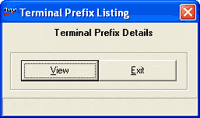

This option provides detailed report about bill prefixes defined in each terminal. The report includes details such as Terminal id, Node name, Active, IP address, Computer Name, Bill type, Pay mode type, Transaction type, Bill prefix, Document no. and Remarks.
How to reach: Catalogue > Listings > Terminal Prefix
The Terminal Prefix window is displayed.
